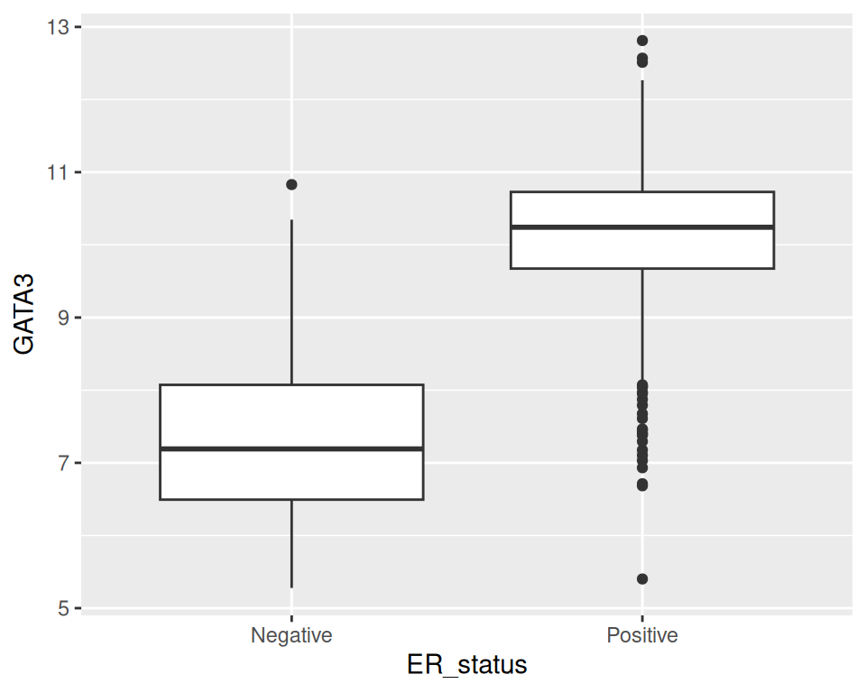
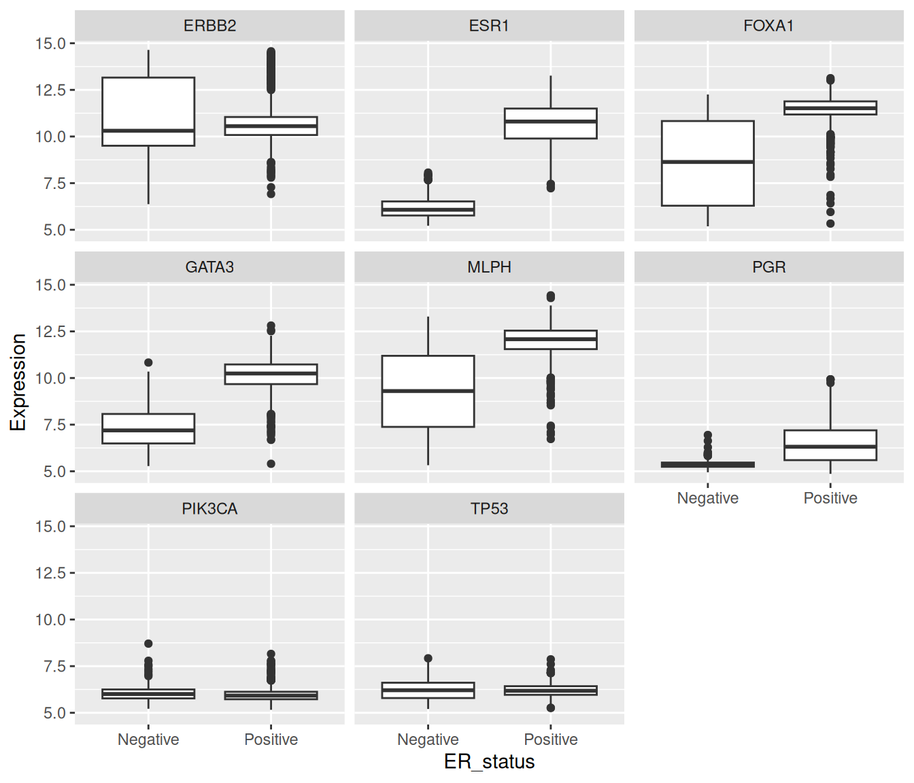
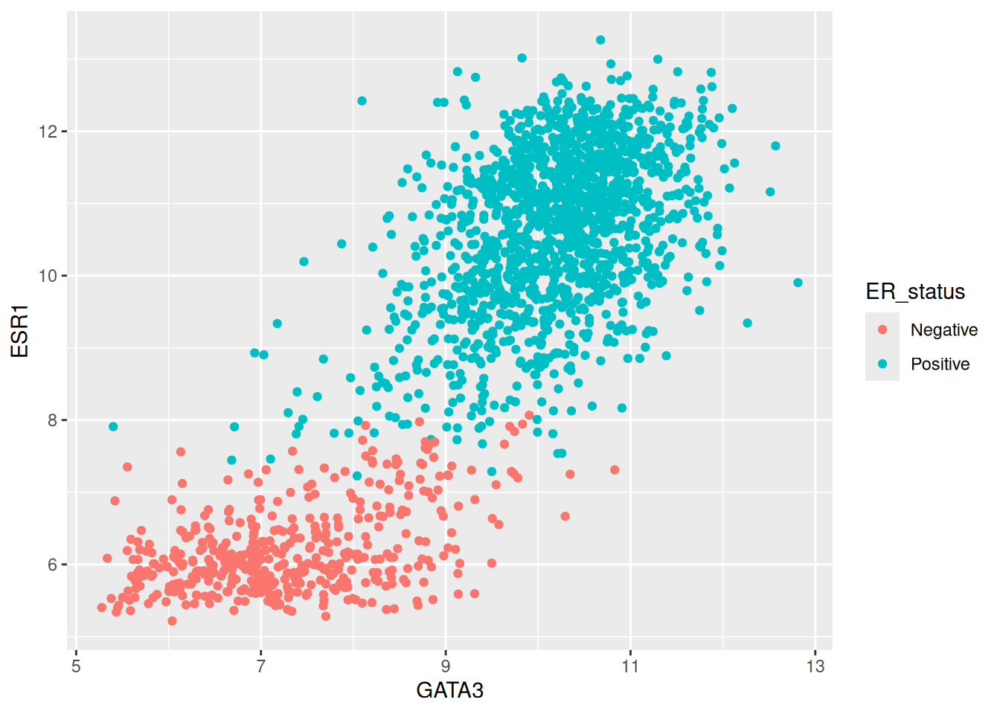
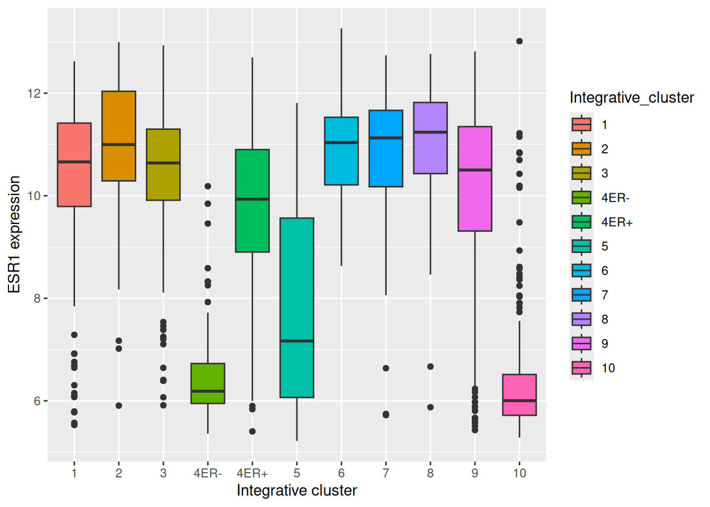
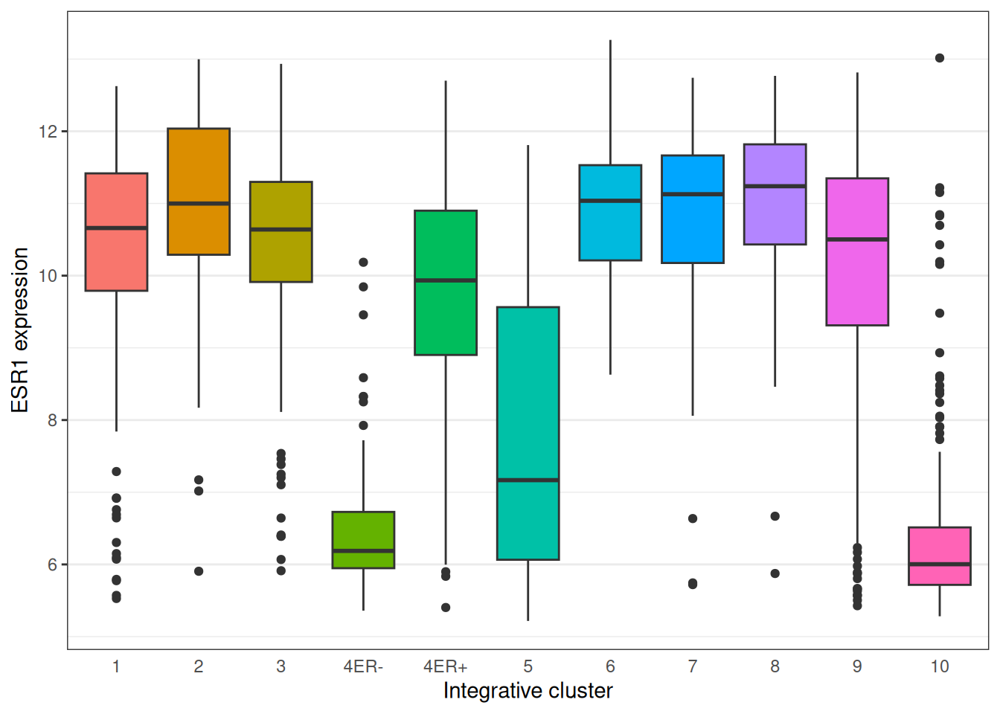
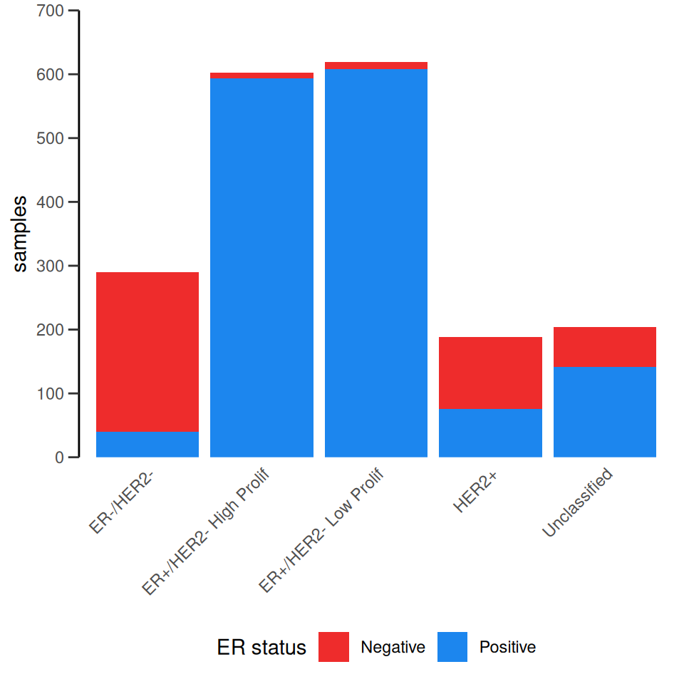
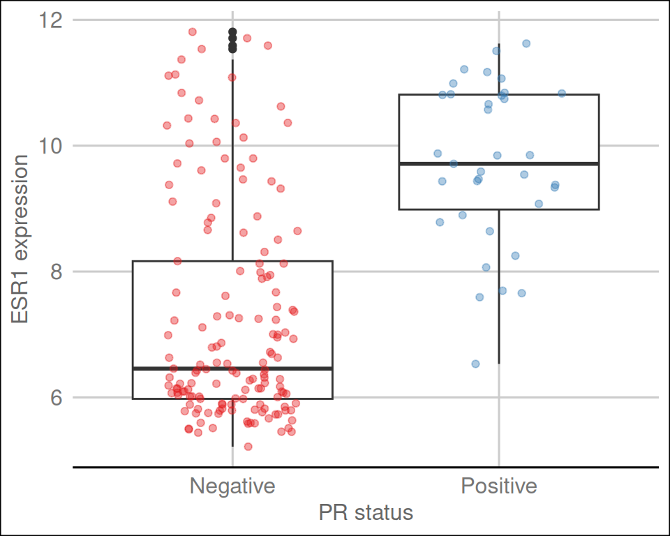

Session 8 – Restructuring data for analysis
Learning objectives
- Understand what makes a data set ‘tidy’ and why you’d want your data to be structured this way
- Use
pivot_longer()andpivot_wider()operations to restructure data frames- Tease apart columns containing multiple variables using
separate()- Modify character variables using string manipulation functions from the stringr package
- Customize non-data components of plots created using ggplot2 by changing the theme
Restructuring data
library(tidyverse)## ── Attaching core tidyverse packages ──────────────────────── tidyverse 2.0.0 ──
## ✔ dplyr 1.1.4 ✔ readr 2.1.5
## ✔ forcats 1.0.0 ✔ stringr 1.5.1
## ✔ ggplot2 3.5.2 ✔ tibble 3.2.1
## ✔ lubridate 1.9.4 ✔ tidyr 1.3.1
## ✔ purrr 1.0.4
## ── Conflicts ────────────────────────────────────────── tidyverse_conflicts() ──
## ✖ dplyr::filter() masks stats::filter()
## ✖ dplyr::lag() masks stats::lag()
## ℹ Use the conflicted package (<http://conflicted.r-lib.org/>) to force all conflicts to become errorsTidy data
what is ‘tidy data’
data from the World Health Organization Global Tuberculosis Report
table1## # A tibble: 6 × 4
## country year cases population
## <chr> <dbl> <dbl> <dbl>
## 1 Afghanistan 1999 745 19987071
## 2 Afghanistan 2000 2666 20595360
## 3 Brazil 1999 37737 172006362
## 4 Brazil 2000 80488 174504898
## 5 China 1999 212258 1272915272
## 6 China 2000 213766 1280428583Two more ways
table2## # A tibble: 12 × 4
## country year type count
## <chr> <dbl> <chr> <dbl>
## 1 Afghanistan 1999 cases 745
## 2 Afghanistan 1999 population 19987071
## 3 Afghanistan 2000 cases 2666
## 4 Afghanistan 2000 population 20595360
## 5 Brazil 1999 cases 37737
## 6 Brazil 1999 population 172006362
## 7 Brazil 2000 cases 80488
## 8 Brazil 2000 population 174504898
## 9 China 1999 cases 212258
## 10 China 1999 population 1272915272
## 11 China 2000 cases 213766
## 12 China 2000 population 1280428583table3## # A tibble: 6 × 3
## country year rate
## <chr> <dbl> <chr>
## 1 Afghanistan 1999 745/19987071
## 2 Afghanistan 2000 2666/20595360
## 3 Brazil 1999 37737/172006362
## 4 Brazil 2000 80488/174504898
## 5 China 1999 212258/1272915272
## 6 China 2000 213766/1280428583Or a split table
table4a## # A tibble: 3 × 3
## country `1999` `2000`
## <chr> <dbl> <dbl>
## 1 Afghanistan 745 2666
## 2 Brazil 37737 80488
## 3 China 212258 213766table4b## # A tibble: 3 × 3
## country `1999` `2000`
## <chr> <dbl> <dbl>
## 1 Afghanistan 19987071 20595360
## 2 Brazil 172006362 174504898
## 3 China 1272915272 1280428583Rules for tidy data
Tidy data
A tidy data set is a data frame (or table) for which the following are true:
- Each variable has its own column
- Each observation has its own row
- Each value has its own cell

A variable contains all values that measure the same underlying attribute (like height, temperature, duration) across units.
An observation contains all values measured on the same unit (like a person or a day) across attributes.
Question: Which of the above representations of TB cases is tidy?
what are the variables in the TB data set?
Take another look at tables 4a and 4b
Pivoting operations
pivot_longer()
table4a## # A tibble: 3 × 3
## country `1999` `2000`
## <chr> <dbl> <dbl>
## 1 Afghanistan 745 2666
## 2 Brazil 37737 80488
## 3 China 212258 213766table4a_long <- pivot_longer(table4a,
c(`1999`, `2000`),
names_to = "year",
values_to = "cases")
table4a_long## # A tibble: 6 × 3
## country year cases
## <chr> <chr> <dbl>
## 1 Afghanistan 1999 745
## 2 Afghanistan 2000 2666
## 3 Brazil 1999 37737
## 4 Brazil 2000 80488
## 5 China 1999 212258
## 6 China 2000 213766table4b_long <- pivot_longer(table4b,
-country,
names_to = "year",
values_to = "population")
table4b_long## # A tibble: 6 × 3
## country year population
## <chr> <chr> <dbl>
## 1 Afghanistan 1999 19987071
## 2 Afghanistan 2000 20595360
## 3 Brazil 1999 172006362
## 4 Brazil 2000 174504898
## 5 China 1999 1272915272
## 6 China 2000 1280428583- join the two pivoted tables to recreate table1*
left_join(table4a_long, table4b_long, by = c("country", "year"))## # A tibble: 6 × 4
## country year cases population
## <chr> <chr> <dbl> <dbl>
## 1 Afghanistan 1999 745 19987071
## 2 Afghanistan 2000 2666 20595360
## 3 Brazil 1999 37737 172006362
## 4 Brazil 2000 80488 174504898
## 5 China 1999 212258 1272915272
## 6 China 2000 213766 1280428583pivot_wider()
pivot_wider() has the opposite effect of
pivot_longer() and can be used to reverse the pivoting
operation we just performed on table4a.
table4a_long## # A tibble: 6 × 3
## country year cases
## <chr> <chr> <dbl>
## 1 Afghanistan 1999 745
## 2 Afghanistan 2000 2666
## 3 Brazil 1999 37737
## 4 Brazil 2000 80488
## 5 China 1999 212258
## 6 China 2000 213766pivot_wider(table4a_long, names_from = "year", values_from = "cases")## # A tibble: 3 × 3
## country `1999` `2000`
## <chr> <dbl> <dbl>
## 1 Afghanistan 745 2666
## 2 Brazil 37737 80488
## 3 China 212258 213766Missing values –> NA
table4a_long <- head(table4a_long, 5)
table4a_long## # A tibble: 5 × 3
## country year cases
## <chr> <chr> <dbl>
## 1 Afghanistan 1999 745
## 2 Afghanistan 2000 2666
## 3 Brazil 1999 37737
## 4 Brazil 2000 80488
## 5 China 1999 212258pivot_wider(table4a_long, names_from = "year", values_from = "cases")## # A tibble: 3 × 3
## country `1999` `2000`
## <chr> <dbl> <dbl>
## 1 Afghanistan 745 2666
## 2 Brazil 37737 80488
## 3 China 212258 NAIn some cases the wide format is the more human-readable form
Let’s look again at table2.
table2## # A tibble: 12 × 4
## country year type count
## <chr> <dbl> <chr> <dbl>
## 1 Afghanistan 1999 cases 745
## 2 Afghanistan 1999 population 19987071
## 3 Afghanistan 2000 cases 2666
## 4 Afghanistan 2000 population 20595360
## 5 Brazil 1999 cases 37737
## 6 Brazil 1999 population 172006362
## 7 Brazil 2000 cases 80488
## 8 Brazil 2000 population 174504898
## 9 China 1999 cases 212258
## 10 China 1999 population 1272915272
## 11 China 2000 cases 213766
## 12 China 2000 population 1280428583Are the type and count columns true variables? And what is the observational unit in this case?
tell-tale sign is when you have to start manipulating to the table to do summary calculations or plots
to create a bar plot of the numbers of TB cases have to first remove the rows corresponding to the populations
How to calculate the rate of new TB cases
table2_fixed <- pivot_wider(table2, names_from = "type", values_from = "count")
table2_fixed## # A tibble: 6 × 4
## country year cases population
## <chr> <dbl> <dbl> <dbl>
## 1 Afghanistan 1999 745 19987071
## 2 Afghanistan 2000 2666 20595360
## 3 Brazil 1999 37737 172006362
## 4 Brazil 2000 80488 174504898
## 5 China 1999 212258 1272915272
## 6 China 2000 213766 1280428583mutate(table2_fixed, rate = cases / population)## # A tibble: 6 × 5
## country year cases population rate
## <chr> <dbl> <dbl> <dbl> <dbl>
## 1 Afghanistan 1999 745 19987071 0.0000373
## 2 Afghanistan 2000 2666 20595360 0.000129
## 3 Brazil 1999 37737 172006362 0.000219
## 4 Brazil 2000 80488 174504898 0.000461
## 5 China 1999 212258 1272915272 0.000167
## 6 China 2000 213766 1280428583 0.000167Splitting columns
table3## # A tibble: 6 × 3
## country year rate
## <chr> <dbl> <chr>
## 1 Afghanistan 1999 745/19987071
## 2 Afghanistan 2000 2666/20595360
## 3 Brazil 1999 37737/172006362
## 4 Brazil 2000 80488/174504898
## 5 China 1999 212258/1272915272
## 6 China 2000 213766/1280428583separate_wider_delim()
The separate_wider_delim() function allows us to split a
character column into multiple columns based on a delimiter or
separator.
table3_separated <- separate_wider_delim(table3,
rate,
names = c("cases", "population"),
delim = "/")
table3_separated## # A tibble: 6 × 4
## country year cases population
## <chr> <dbl> <chr> <chr>
## 1 Afghanistan 1999 745 19987071
## 2 Afghanistan 2000 2666 20595360
## 3 Brazil 1999 37737 172006362
## 4 Brazil 2000 80488 174504898
## 5 China 1999 212258 1272915272
## 6 China 2000 213766 1280428583But it’s not quite right
mutate(table3_separated, rate = cases / population)## Error in `mutate()`:
## ℹ In argument: `rate = cases/population`.
## Caused by error in `cases / population`:
## ! non-numeric argument to binary operatorneed to convert to numerics
table3_separated <- separate_wider_delim(table3,
rate,
names = c("cases", "population"),
delim = "/") %>%
mutate(across(c(cases, population), as.integer)) %>%
mutate(rate = cases / population)
table3_separated## # A tibble: 6 × 5
## country year cases population rate
## <chr> <dbl> <int> <int> <dbl>
## 1 Afghanistan 1999 745 19987071 0.0000373
## 2 Afghanistan 2000 2666 20595360 0.000129
## 3 Brazil 1999 37737 172006362 0.000219
## 4 Brazil 2000 80488 174504898 0.000461
## 5 China 1999 212258 1272915272 0.000167
## 6 China 2000 213766 1280428583 0.000167In addition to separate_wider_delim(), the tidyr package
provides a two other functions for splitting columns:
separate_wider_regex()- for splitting columns based on a regular expressionseparate_wider_fixed()- for splitting columns based on a fixed number of characters
Example 1: METABRIC gene expression
metabric <- read_csv("data/metabric_clinical_and_expression_data.csv") %>%
select(Patient_ID, ER_status, ESR1:MLPH)
metabric## # A tibble: 1,904 × 10
## Patient_ID ER_status ESR1 ERBB2 PGR TP53 PIK3CA GATA3 FOXA1 MLPH
## <chr> <chr> <dbl> <dbl> <dbl> <dbl> <dbl> <dbl> <dbl> <dbl>
## 1 MB-0000 Positive 8.93 9.33 5.68 6.34 5.70 6.93 7.95 9.73
## 2 MB-0002 Positive 10.0 9.73 7.51 6.19 5.76 11.3 11.8 12.5
## 3 MB-0005 Positive 10.0 9.73 7.38 6.40 6.75 9.29 11.7 10.3
## 4 MB-0006 Positive 10.4 10.3 6.82 6.87 7.22 8.67 11.9 10.5
## 5 MB-0008 Positive 11.3 9.96 7.33 6.34 5.82 9.72 11.6 12.2
## 6 MB-0010 Positive 11.2 9.74 5.95 5.42 6.12 9.79 12.1 11.4
## 7 MB-0014 Positive 10.8 9.28 7.72 5.99 7.48 8.37 11.5 10.8
## 8 MB-0022 Positive 10.4 8.61 5.59 6.17 7.59 7.87 10.7 9.95
## 9 MB-0028 Positive 12.5 10.7 5.33 6.22 6.25 10.3 12.1 10.9
## 10 MB-0035 Positive 7.54 11.5 5.59 6.41 5.99 10.2 12.8 13.5
## # ℹ 1,894 more rowsA single gene boxplot
ggplot(metabric) +
geom_boxplot(mapping = aes(x = ER_status, y = GATA3))
what if we would like to create a series of plots using faceting
metabric <- pivot_longer(metabric,
ESR1:MLPH,
names_to = "Gene",
values_to = "Expression")
metabric## # A tibble: 15,232 × 4
## Patient_ID ER_status Gene Expression
## <chr> <chr> <chr> <dbl>
## 1 MB-0000 Positive ESR1 8.93
## 2 MB-0000 Positive ERBB2 9.33
## 3 MB-0000 Positive PGR 5.68
## 4 MB-0000 Positive TP53 6.34
## 5 MB-0000 Positive PIK3CA 5.70
## 6 MB-0000 Positive GATA3 6.93
## 7 MB-0000 Positive FOXA1 7.95
## 8 MB-0000 Positive MLPH 9.73
## 9 MB-0002 Positive ESR1 10.0
## 10 MB-0002 Positive ERBB2 9.73
## # ℹ 15,222 more rowsggplot(data = metabric,
mapping = aes(x = ER_status, y = Expression)) +
geom_boxplot() +
facet_wrap(vars(Gene))
If we want to be able to plot one gene against another
metabric %>%
pivot_wider(names_from = "Gene", values_from = "Expression") %>%
ggplot() +
geom_point(mapping = aes(x = GATA3, y = ESR1, colour = ER_status))
Example 2: Protein levels in MCF-7 after treatment with tamoxifen
library(readxl)
protein_levels <- read_excel("data/41467_2018_4619_MOESM11_ESM.xlsx", skip = 1)
select(protein_levels, `Uniprot Accession`, `Gene Name`, ends_with("rep01"))## # A tibble: 7,943 × 6
## `Uniprot Accession` `Gene Name` vehicle.rep01 tam.2h.rep01 tam.6h.rep01
## <chr> <chr> <dbl> <dbl> <dbl>
## 1 Q09666 AHNAK 17.3 17.3 17.3
## 2 P05787 KRT8 16.9 17.1 17.0
## 3 Q15149 PLEC 16.7 16.7 16.7
## 4 P21333 FLNA 16.6 16.5 16.6
## 5 P05783 KRT18 16.4 16.6 16.5
## 6 P49327 FASN 16.0 16.0 16.0
## 7 P10809 HSPD1 16.1 16.2 16.1
## 8 Q14204 DYNC1H1 16.0 15.9 16.0
## 9 O75369 FLNB 16.1 16.1 16.2
## 10 P35579 MYH9 15.7 15.6 15.8
## # ℹ 7,933 more rows
## # ℹ 1 more variable: tam.24h.rep01 <dbl>Let’s just use a subset of the table
protein_levels <- protein_levels %>%
filter(`log2FC(24h/veh)` < -0.75) %>%
select(accession = `Uniprot Accession`,
gene = `Gene Name`,
vehicle.rep01:tam.24h.rep04)
protein_levels## # A tibble: 10 × 18
## accession gene vehicle.rep01 tam.2h.rep01 tam.6h.rep01 tam.24h.rep01
## <chr> <chr> <dbl> <dbl> <dbl> <dbl>
## 1 Q4ZG55 GREB1 12.1 12 11.6 9.78
## 2 P15514 AREG 11.4 11.3 11.3 9.92
## 3 Q13433 SLC39A6 10.9 10.8 10.7 9.89
## 4 Q9NPD8 UBE2T 10.4 10.3 10.2 9.62
## 5 Q6N021 TET2 10.1 10.0 9.59 8.75
## 6 P06401 PGR 9.97 10.0 9.75 8.75
## 7 P25929 NPY1R 9.08 9.16 8.89 7.94
## 8 O95084 PRSS23 8.45 8.53 8.27 7.78
## 9 P08493 MGP 6.76 6.76 6.18 5.09
## 10 Q96BR1 SGK3 6.33 6.42 6.16 5.5
## # ℹ 12 more variables: vehicle.rep02 <dbl>, tam.2h.rep02 <dbl>,
## # tam.6h.rep02 <dbl>, tam.24h.rep02 <dbl>, vehicle.rep03 <dbl>,
## # tam.2h.rep03 <dbl>, tam.6h.rep03 <dbl>, tam.24h.rep03 <dbl>,
## # vehicle.rep04 <dbl>, tam.2h.rep04 <dbl>, tam.6h.rep04 <dbl>,
## # tam.24h.rep04 <dbl>Column names show:
- the treatment
- the time at which the protein levels are measured after treatment
- the number of the replicate sample for that treatment and time point
First pivot
protein_levels <- pivot_longer(protein_levels,
vehicle.rep01:tam.24h.rep04,
names_to = "sample",
values_to = "protein_level")
protein_levels## # A tibble: 160 × 4
## accession gene sample protein_level
## <chr> <chr> <chr> <dbl>
## 1 Q4ZG55 GREB1 vehicle.rep01 12.1
## 2 Q4ZG55 GREB1 tam.2h.rep01 12
## 3 Q4ZG55 GREB1 tam.6h.rep01 11.6
## 4 Q4ZG55 GREB1 tam.24h.rep01 9.78
## 5 Q4ZG55 GREB1 vehicle.rep02 11.3
## 6 Q4ZG55 GREB1 tam.2h.rep02 11.4
## 7 Q4ZG55 GREB1 tam.6h.rep02 11.1
## 8 Q4ZG55 GREB1 tam.24h.rep02 8.98
## 9 Q4ZG55 GREB1 vehicle.rep03 11.0
## 10 Q4ZG55 GREB1 tam.2h.rep03 11.0
## # ℹ 150 more rowsNow we can use separate()
Problem with the control
Some useful stringr functions
str_c("tidyverse", "fab", sep = " is ")## [1] "tidyverse is fab"str_replace("Oscar is the best cat in the world", "best", "loveliest")## [1] "Oscar is the loveliest cat in the world"str_replace_all("the cat sat on the mat", "at", "AT")## [1] "the cAT sAT on the mAT"str_remove("the cat sat on the mat", "at")## [1] "the c sat on the mat"str_remove_all("the cat sat on the mat", "at")## [1] "the c s on the m"str_sub(c("tamoxifen", "vehicle"), 1, 3)## [1] "tam" "veh"str_replace("vehicle.rep01", "vehicle", "vehicle.24h")## [1] "vehicle.24h.rep01"str_replace(protein_levels$sample[1:10], "vehicle", "vehicle.24h")## [1] "vehicle.24h.rep01" "tam.2h.rep01" "tam.6h.rep01"
## [4] "tam.24h.rep01" "vehicle.24h.rep02" "tam.2h.rep02"
## [7] "tam.6h.rep02" "tam.24h.rep02" "vehicle.24h.rep03"
## [10] "tam.2h.rep03"protein_levels <- mutate(protein_levels,
sample = str_replace(sample, "vehicle", "vehicle.24h"))
protein_levels## # A tibble: 160 × 4
## accession gene sample protein_level
## <chr> <chr> <chr> <dbl>
## 1 Q4ZG55 GREB1 vehicle.24h.rep01 12.1
## 2 Q4ZG55 GREB1 tam.2h.rep01 12
## 3 Q4ZG55 GREB1 tam.6h.rep01 11.6
## 4 Q4ZG55 GREB1 tam.24h.rep01 9.78
## 5 Q4ZG55 GREB1 vehicle.24h.rep02 11.3
## 6 Q4ZG55 GREB1 tam.2h.rep02 11.4
## 7 Q4ZG55 GREB1 tam.6h.rep02 11.1
## 8 Q4ZG55 GREB1 tam.24h.rep02 8.98
## 9 Q4ZG55 GREB1 vehicle.24h.rep03 11.0
## 10 Q4ZG55 GREB1 tam.2h.rep03 11.0
## # ℹ 150 more rowsprotein_levels <- separate_wider_delim(protein_levels,
sample,
names = c("treatment", "time", "replicate"),
delim = ".")
protein_levels## # A tibble: 160 × 6
## accession gene treatment time replicate protein_level
## <chr> <chr> <chr> <chr> <chr> <dbl>
## 1 Q4ZG55 GREB1 vehicle 24h rep01 12.1
## 2 Q4ZG55 GREB1 tam 2h rep01 12
## 3 Q4ZG55 GREB1 tam 6h rep01 11.6
## 4 Q4ZG55 GREB1 tam 24h rep01 9.78
## 5 Q4ZG55 GREB1 vehicle 24h rep02 11.3
## 6 Q4ZG55 GREB1 tam 2h rep02 11.4
## 7 Q4ZG55 GREB1 tam 6h rep02 11.1
## 8 Q4ZG55 GREB1 tam 24h rep02 8.98
## 9 Q4ZG55 GREB1 vehicle 24h rep03 11.0
## 10 Q4ZG55 GREB1 tam 2h rep03 11.0
## # ℹ 150 more rowsprotein_levels <- protein_levels %>%
mutate(group = str_sub(treatment, 1, 3)) %>%
mutate(group = str_c(group, time)) %>%
mutate(group = as_factor(group))
protein_levels## # A tibble: 160 × 7
## accession gene treatment time replicate protein_level group
## <chr> <chr> <chr> <chr> <chr> <dbl> <fct>
## 1 Q4ZG55 GREB1 vehicle 24h rep01 12.1 veh24h
## 2 Q4ZG55 GREB1 tam 2h rep01 12 tam2h
## 3 Q4ZG55 GREB1 tam 6h rep01 11.6 tam6h
## 4 Q4ZG55 GREB1 tam 24h rep01 9.78 tam24h
## 5 Q4ZG55 GREB1 vehicle 24h rep02 11.3 veh24h
## 6 Q4ZG55 GREB1 tam 2h rep02 11.4 tam2h
## 7 Q4ZG55 GREB1 tam 6h rep02 11.1 tam6h
## 8 Q4ZG55 GREB1 tam 24h rep02 8.98 tam24h
## 9 Q4ZG55 GREB1 vehicle 24h rep03 11.0 veh24h
## 10 Q4ZG55 GREB1 tam 2h rep03 11.0 tam2h
## # ℹ 150 more rowsComputing the mean protein levels within each group is now very straightforward.
protein_levels %>%
group_by(accession, gene, group) %>%
summarize(protein_level = mean(protein_level))## `summarise()` has grouped output by 'accession', 'gene'. You can override using
## the `.groups` argument.## # A tibble: 40 × 4
## # Groups: accession, gene [10]
## accession gene group protein_level
## <chr> <chr> <fct> <dbl>
## 1 O95084 PRSS23 veh24h 8.16
## 2 O95084 PRSS23 tam2h 8.2
## 3 O95084 PRSS23 tam6h 8.03
## 4 O95084 PRSS23 tam24h 7.20
## 5 P06401 PGR veh24h 9.44
## 6 P06401 PGR tam2h 9.66
## 7 P06401 PGR tam6h 9.41
## 8 P06401 PGR tam24h 8.39
## 9 P08493 MGP veh24h 5.59
## 10 P08493 MGP tam2h 5.69
## # ℹ 30 more rowsFurther customization of plots with ggplot2
Themes
# read in the METABRIC data, convert the Integrative_cluster variable into a
# categorical variable with the levels in the correct order, and select just
# the columns and rows we're going to use
cluster_order <- c("1", "2", "3", "4ER-", "4ER+", "5", "6", "7", "8", "9", "10")
metabric <- read_csv("data/metabric_clinical_and_expression_data.csv") %>%
mutate(Integrative_cluster = factor(Integrative_cluster,
levels = cluster_order)) %>%
mutate(`3-gene_classifier` = replace_na(`3-gene_classifier`,
"Unclassified")) %>%
select(Patient_ID,
ER_status,
PR_status,
`3-gene_classifier`,
Integrative_cluster,
ESR1) %>%
filter(!is.na(Integrative_cluster), !is.na(ESR1))
metabric## # A tibble: 1,904 × 6
## Patient_ID ER_status PR_status `3-gene_classifier` Integrative_cluster ESR1
## <chr> <chr> <chr> <chr> <fct> <dbl>
## 1 MB-0000 Positive Negative ER-/HER2- 4ER+ 8.93
## 2 MB-0002 Positive Positive ER+/HER2- High Prol… 4ER+ 10.0
## 3 MB-0005 Positive Positive Unclassified 3 10.0
## 4 MB-0006 Positive Positive Unclassified 9 10.4
## 5 MB-0008 Positive Positive ER+/HER2- High Prol… 9 11.3
## 6 MB-0010 Positive Positive ER+/HER2- High Prol… 7 11.2
## 7 MB-0014 Positive Positive Unclassified 3 10.8
## 8 MB-0022 Positive Negative Unclassified 3 10.4
## 9 MB-0028 Positive Negative ER+/HER2- High Prol… 9 12.5
## 10 MB-0035 Positive Negative ER+/HER2- High Prol… 3 7.54
## # ℹ 1,894 more rowsplot <- ggplot(data = metabric) +
geom_boxplot(mapping = aes(x = Integrative_cluster, y = ESR1, fill = Integrative_cluster)) +
labs(x = "Integrative cluster", y = "ESR1 expression")
plot
plot + theme_bw()
plot +
theme_bw() +
theme(
panel.grid.major.x = element_blank(),
axis.ticks.x = element_blank(),
legend.position = "none"
)
Here’s another example that also involves customizing the labels, scales and colours.
ggplot(data = metabric) +
geom_bar(mapping = aes(x = `3-gene_classifier`, fill = ER_status)) +
scale_y_continuous(limits = c(0, 700),
breaks = seq(0, 700, 100),
expand = expand_scale(mult = 0)) +
scale_fill_manual(values = c("firebrick2", "dodgerblue2")) +
labs(x = NULL, y = "samples", fill = "ER status") +
theme_bw() +
theme(panel.border = element_blank(),
panel.grid = element_blank(),
axis.ticks.x = element_blank(),
axis.text.x = element_text(angle = 45, hjust = 1, vjust = 1),
axis.line.y = element_line(),
axis.ticks.length.y = unit(0.2, "cm"),
legend.position = "bottom")## Warning: `expand_scale()` was deprecated in ggplot2 3.3.0.
## ℹ Please use `expansion()` instead.
## This warning is displayed once every 8 hours.
## Call `lifecycle::last_lifecycle_warnings()` to see where this warning was
## generated.
library(ggthemes)
metabric %>%
filter(`3-gene_classifier` == "HER2+") %>%
ggplot(mapping = aes(x = PR_status, y = ESR1)) +
geom_boxplot() +
geom_jitter(mapping = aes(colour = PR_status),
width = 0.25,
alpha = 0.4,
show.legend = FALSE) +
scale_colour_brewer(palette = "Set1") +
labs(x = "PR status", y = "ESR1 expression") +
theme_gdocs()
Position adjustments
SKIP
Saving plot images
Use ggsave() to save the last plot you displayed.
ggsave("esr1_expression.png")You can alter the width and height of the plot and can change the image file type.
ggsave("esr1_expression.pdf", width = 20, height = 12, units = "cm")